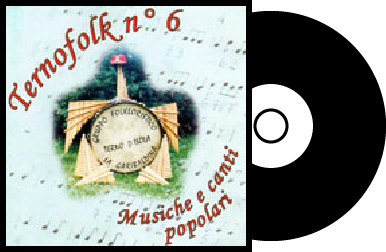

Abbiamo un ampio repertorio di canzoni tradizionali, ma anche dei famosi brani internazionali

Noi garibaldini
Madonnina dai riccioli d'oro
Minuetto di Bach
Amici miei
Fantasia dalla traviata
IL NOSTRO REPERTORIO
Il nostro repertorio si sviluppa soprattutto nell'ambito di brani folcloristici e patriottici,
ma abbiamo anche un ampio settore riservato ai brani più conosciuti e internazionali
BRANI NATALIZI
Adeste Fideles,
Astro del Ciel,
In notte placida,
Pifferata,
Tu scendi dalle stelle